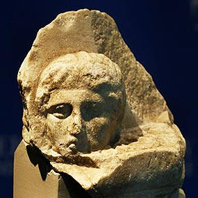

Museu foi pupilo ou filho de
Orfeu e da deusa Selene. Tido como
sacerdote e mítico
vidente, terá sido o fundador da poesia
na Ática. De
acordo com Pausanias (geógrafo do Século II a. C.), terá sido enterrado na colina
de Museu, a sudoeste da
Acrópole.
As obras Titanomachia e Theogonia
são atribuídas a Museu, que terá composto
também dedicatórias, hinos de purificação e
respostas oraculares — recolhidos e ordenados
por Onomacritus, no tempo de Peisistrato, que lhe terá introduzido
algumas alterações.